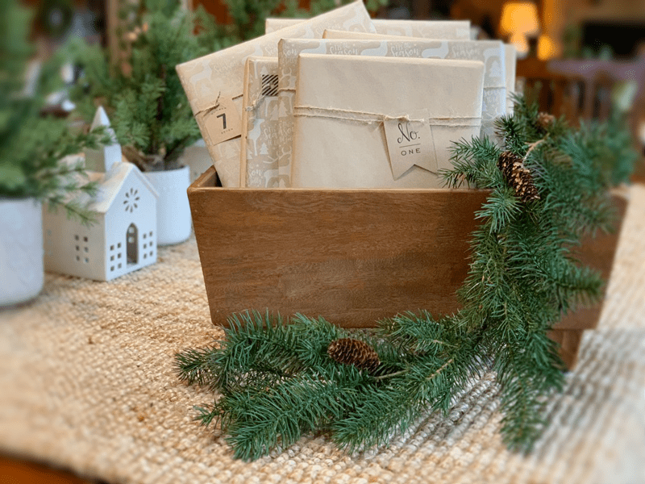
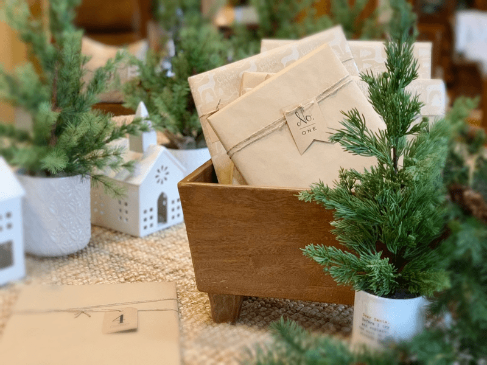
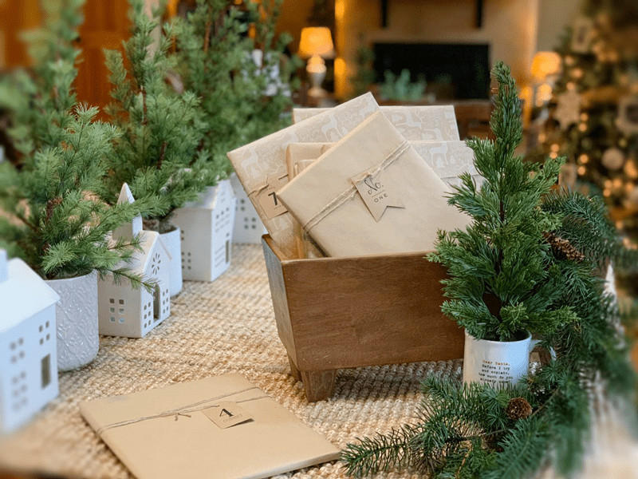

Christmas Storybook Tradition
I don’t know if you feel the same way, but I love traditions. I am not referring to routines which are totally different. We all have daily routines in some form or fashion. Your alarm clock may go off routinely; you may make a smoothie every morning, you check the mailbox every afternoon at 3:00 pm or you may look at Nouveauraw for daily inspiration. Routines come and go based on life ‘s necessities.

Traditions, on the other hand, are long-established customs that get passed on through the years and tend to stay with you no matter where you are in life. Traditions give us a shared identity. Not only do they strengthen our bond as a family unit, but they also create structure, stability, a sense of familiarity, safety, and they help us to nourish one another.
Traditions can be big or small, but they differ from routines and habits in that they are done with a specific purpose in mind and require thought and intention. I am always seeking ways to bond with my husband and traditions lend a certain magic, spirit, and texture to our everyday lives. For instance, years ago, Bob and I created a ritual of enjoying a cup of coffee (or whatever) together every morning. Even when we have company in the house, we wake up early so we can snuggle on the couch and enjoy a cozy beverage together. As we yawn and become wide-eyed for the day, we check in with one other, “How did you sleep? How are you feeling? What are the goals for the day?” and so forth.
We try to do this very same thing roughly between one and three pm as well. Even though we live and work together 24/7, we still find that sitting down together and connecting keeps us on track or helps us redirect the direction of the day. We rarely miss these little traditions. For it’s moments like these that manifest an antidote to the harried feeling that comes from our fast-paced and ever-changing world. They bring grounding, comfort, and the feeling of being present. This one little practice may seem silly to you, but researchers have found that families (couples) that engage in such traditions report stronger connection and unity than families that haven’t established rituals together.
Married Seventy-eight Years
This past November, we celebrated Thanksmas. You can read about that (link) if you missed it. Both of my grandparents joined us for the first time and what an honor that was. One day grandma was talking about how long they have been married with a big smile shining in her eyes… seventy-eight years! I find it difficult to wrap my head around that number and it got me to thinking – when a person spends that many years with a spouse you inevitably create traditions especially when you have kids and grandkids.
Then I thought about Bob and me. We have been married for over ten years, and we don’t have any children, so the traditions we create are between just the two of us. We won’t have the luxury of being married as long as my grandparents so if we want to enhance this type of special bond between us, it is up to us to create those magical moments that will continue with each blessed year that we have together.

So, I decided to create another heartwarming, inner-child approved tradition with Bob. I purchased ten children’s Christmas storybooks for us to read to each other, starting ten days before Christmas. We will get the fire going in the fireplace, pour us a warm tea/coffee/hot chocolate, dim the lightening (but not too low so we can still read hehe), wrap ourselves up in a fluffy blanket on the couch, and get lost in the innocent wonderment of a child.
Next year for our 11th Anniversary, I will add another Christmas book to our collection and then we will start reading them 11 days for Christmas. Catching the trend of where this is heading?

I wrapped each book in paper and numbered them. They will all reside in the living room, piled on the coffee table. They will be waiting for us to unwrap one each night as Christmas grows closer. Don’t forget to take a moment to close your eyes, draw in a few deep belly breaths, and savor these moments. Have a blessed and wonderful holiday, amie sue
© AmieSue.com